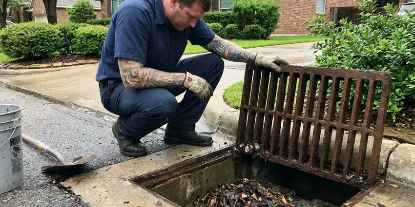

Plumbers Near Me in Bennington, VT
Trust CKV Plumbing to be your first-call plumbers near me in Bennington, VT, offering expert solutions for all your residential and commercial needs.
- Fast, Reliable Service
- Fast Local Service
- Expert Vermont Plumbers
- Fully Stocked Service Trucks

Licensed Plumbers On Call Today in Bennington, VT.
Schedule your service with CKV Plumbing and get professional plumbing care tailored to your needs.
Trusted Local Plumbers Serving Every Home in Bennington, VT
CKV Plumbing built its reputation on showing up when promised and fixing problems the first time. Our trucks carry common parts from brands like Moen, Delta, Kohler, Rheem and A. O. Smith, so most repairs are finished the same day.
Our expertise includes:
- Water Heater Repair & Installation
- Drain Cleaning & Clog Removal
- Clear stubborn clogs from drains and sewer lines.

Additional Plumbing Maintenance Services in Bennington, VT
Our maintenance and specialty plumbing services in Bennington, VT protect your home year-round and extend the life of every system.


Customers
Why Choose CKV Plumbing for Plumbers Near Me in Bennington, VT?
Our team brings extensive knowledge of Vermont plumbing systems, offering solutions that stand up to local conditions and codes.
- Certified Pros, All our technicians are licensed, insured, and regularly trained on the latest plumbing technologies and Vermont codes.
- Work Guaranteed, Our repairs carry a written workmanship guarantee.
- Local Expertise, Our plumbers understand the effects of Bennington's soil and water conditions, which can impact plumbing systems.
Citywide Coverage
CKV Plumbing proudly serves every neighborhood and surrounding community in Bennington. Whether you're in an older district or a new development, our plumbers are always nearby and ready to dispatch.
Experienced Team
The CKV Plumbing plumbing team is made up of committed professionals who take pride in their craft. They have deep knowledge of plumbing systems, allowing them to diagnose problems accurately and deliver effective, long-lasting solutions for our Bennington customers.
Safety-First Approach
We follow the plumbing code adopted in your city or county and pull permits for water heater, gas and repipe jobs when required. Every repair is tested before we leave.
Trusted Certified Bennington Plumbing Services Professionals
At CKV Plumbing, we take pride in providing certified plumbing services throughout Bennington, VT. Backed by recognized industry credentials, our experienced plumbers combine technical skill with genuine customer care. Whether it is repair, installation, or maintenance, we follow strict safety and quality standards to deliver long-lasting results you can trust.
Call Us Now PHCC Plumbing Contractor Recognition
PHCC Plumbing Contractor Recognition Better Business Bureau (BBB) Accreditation
Better Business Bureau (BBB) Accreditation Angi Certified Pro
Angi Certified Pro ISO 9001 Quality Management Certification
ISO 9001 Quality Management CertificationDependable Plumbers Near Me Services in Bennington, VT
Toilet, Faucet and Fixture Repair in Bennington, VT
Running toilets, dripping faucets and leaky shower valves waste water and drive up your bill. We replace flappers, fill valves, cartridges and wax rings, or install new fixtures when repairs no longer make sense. Mineral buildup from hard water often wears out cartridges faster, so we carry common replacements. We can also install water-efficient fixtures that meet current standards.

Water Softener and Filtration Service in Bennington
Town water systems in Bennington and other communities are generally reliable, but older service lines can add rust and discolored water. Hard water leaves scale on fixtures, inside water heaters and in pipes. We install and service water softeners, reverse osmosis drinking water systems and whole-house filters. Proper installation includes a bypass valve, drain connection and correct salt settings. Treated water helps your plumbing and appliances last years longer.
Toilet Repair & Installation in Bennington, VT
A running toilet, weak flush, or persistent leak can waste water and drive up utility bills. Our plumbers are skilled at repairing all common toilet issues, including fill valve, flapper, and wax ring replacements. We also provide professional installation of new, water-efficient toilets that meet Bennington, VT building codes and improve your bathroom's function.
Emergency Plumbing in Bennington
Plumbing emergencies don't wait for business hours. Whether it's a burst pipe, a major sewer backup, or a sudden water heater failure, our emergency plumbers in Bennington are available to provide rapid response and effective solutions. We understand the urgency of these situations and arrive equipped to diagnose and mitigate the problem quickly, minimizing damage and restoring peace of mind to your home or business.
Commercial Plumbing Service in Bennington, VT
Restaurants, offices, salons and retail spaces need plumbing that works every day. We handle commercial water heaters, grease traps, backflow testing, restroom fixtures and drain lines. Preventive maintenance plans reduce downtime and surprise repairs. We can schedule work before or after business hours to suit you.
Drain Cleaning & Clog Removal in Bennington
Stubborn clogs can disrupt daily life. Our plumbers use advanced techniques, including hydro-jetting and camera inspections, to thoroughly clear blockages from sinks, toilets, showers, and main sewer lines. We identify the cause of the clog, whether it's grease buildup or tree roots common in Bennington's older neighborhoods, and make sure your drains flow freely.
Gas Line Repair and Installation in Bennington
We repair and install gas lines for water heaters, ranges, dryers, fireplaces and outdoor kitchens. All gas work is pressure tested, and we pull permits when the local code requires them. If you smell gas, leave the home and call your gas utility first, then call us for the repair. We use approved materials such as black iron and CSST with proper electrical bonding.

Water Heater Repair & Installation in Bennington, VT
From traditional tank heaters to modern tankless systems, our experts specialize in water heater repair and installation. We diagnose issues like no hot water, strange noises, or leaks, and recommend the most energy-efficient solutions for your Bennington home. We work with trusted brands like Rheem, AO Smith, and Bradford White, for reliable hot water for your family.
Why Choose CKV Plumbing for Plumbers Near Me in Bennington, VT?
Being 'near me' isn't just about proximity, it's about understanding the needs of our Bennington community. From navigating local building codes to addressing local issues like water quality or soil movement, our plumbers are equipped with the knowledge and tools to deliver quality service right where you need it.
Our commitment to the Bennington community means we provide prompt, reliable service with a focus on long-term solutions, not just quick fixes. We understand that local conditions, such as water hardness and soil movement, play a significant role in plumbing health, and our work reflects that understanding.
CKV Plumbing at a Glance
- Fully licensed plumbing team covering Bennington, VT
- Same-day appointments and 24/7 emergency response
- Clear written estimates, no hidden fees
- 4.8-star rated by 553+ Vermont customers
Bennington Map
Bennington Information
- Population
- 8,795
- Area codes
- Local
- Service area
- Bennington and communities within 40 miles
- Nearby
- Brattleboro, Rutland, Middlebury, Barre
Short summers with occasional humidity bring condensation on cold pipes in basements, which can lead to drips and mold if left alone. Water quality and slab foundations can also put real strain on plumbing in Bennington, VT, so having a reliable local plumber on call protects your home.
Expert Services
Trust our professionals for reliable CKV Plumbing solutions in Bennington, VT.
Our Specialized Plumbing Services in Bennington, VT
At CKV Plumbing, we provide a complete range of plumbing services across Bennington, VT. From leak detection to full system installations, our team ensures fast, precise, and affordable service for both residential and commercial properties. Explore our core services below:


How Our Plumbers Near Me Process Works in Bennington, VT
We make plumbing service simple from your first call to the completion of the job.
Request a Quote
Call (802) 209-5139 and describe the plumbing problem you are having. We schedule a licensed plumber and give you a clear arrival window.
Diagnose and Price
Your plumber inspects the issue and explains the options. You receive a written price before any work begins.
Repair and Review
We complete the repair, test everything and clean up. Then we review the work with you and answer any questions you have.
Frequently Asked Questions About Plumbers Near Me in Bennington
Most service calls range from $75 to $150 for diagnosis, often applied toward the repair. Common repairs like faucet or toilet fixes run $150 to $400, while water heater replacements usually cost $1,400 to $3,500 installed. We give you a written price before starting.
For many significant plumbing projects in Bennington, such as water heater installation, main line repairs, or major repiping, a permit is required by local code. This ensures the work meets safety and quality standards. CKV Plumbing will handle all required permit applications and inspections for your project.
For plumbing emergencies in Bennington, we focus on rapid response. We aim to have a licensed plumber at your location as quickly as possible, often within a few hours, to address urgent issues like burst pipes or severe leaks. Call us directly for immediate assistance.
We install and service Rheem, Bradford White, A. O. Smith, Navien, Rinnai and other major brands. We help you choose the right size and fuel type for your household. Tankless and high-efficiency options are available.
Common plumbing issues include mineral buildup in pipes and water heaters, slab leaks, root intrusion into sewer lines, and general wear and tear on older galvanized or cast iron pipes. Older homes often still have galvanized supply lines, cast iron drains or even lead service lines that deserve inspection and replacement. Our plumbers are experienced in addressing these local challenges.
We recommend having a professional plumbing inspection every 1 to 2 years, especially for older homes in Bennington. Regular inspections can help identify minor issues before they become major problems, extend the lifespan of your plumbing system, and keep everything running efficiently. This proactive approach can save you money and prevent emergencies down the line.
Yes, CKV Plumbing stands behind the quality of our work. We offer full warranties on both parts and labor for our plumbing services in Bennington, VT. Specific warranty details will be provided with your service agreement, for your peace of mind.
Town water systems in Bennington and other communities are generally reliable, but older service lines can add sediment and discolored water. Hard water leaves mineral scale on faucets, showerheads and inside water heaters and pipes. Over time this reduces flow and shortens the life of fixtures and appliances. A water softener can help protect your plumbing.
What People Are Saying About Our Plumbing Experts?

Robert G.
The trenchless sewer replacement saved our front yard. They walked us through the camera inspection footage first so we knew exactly what we were paying for.
Sewer Line Replacement · Montpelier, VT
Daniel K.
A pipe burst at 11 pm and they actually answered. The plumber showed up within the hour, shut everything down, and had us back to normal the next morning. Could not ask for more.
Emergency Plumbing · Barre, VT
Mark T.
When our office needed drain cleaning, CKV Plumbing provided quick, reliable service. The plumber arrived on time and made sure every drain flowed perfectly before leaving. Very satisfied.
Drain Cleaning · Rutland, VT
Patricia H.
We had a slab leak that two other companies could not find. CKV Plumbing located it in under an hour, explained our options, and the price matched the quote to the dollar.
Slab Leak Repair · Barre, VTJames P.
Our commercial plumbing system had a leak under the sink, and CKV Plumbing handled it professionally. The plumbers arrived quickly and restored everything without disruption to our customers.
Commercial Plumbing · Rutland, VT
Sofia M.
Two new toilets installed in one visit, no mess left behind, and the tech even adjusted a faucet he noticed was dripping. Fair pricing and really friendly.
Toilet Installation · Montpelier, VT